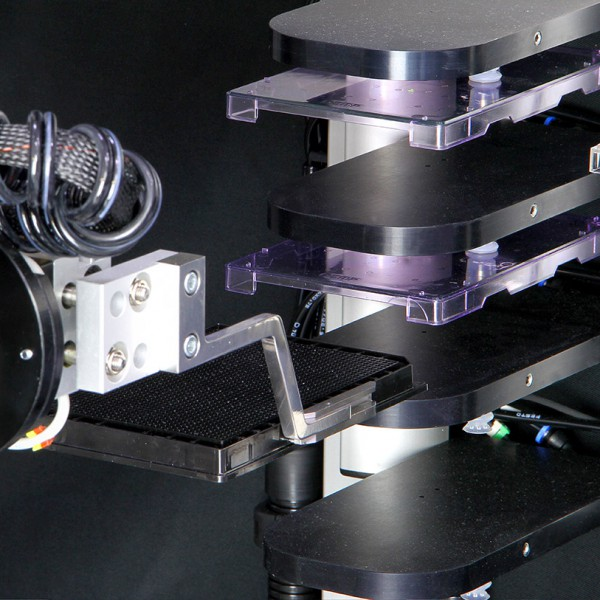
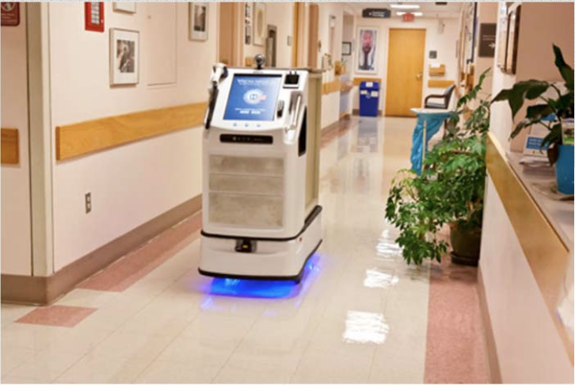
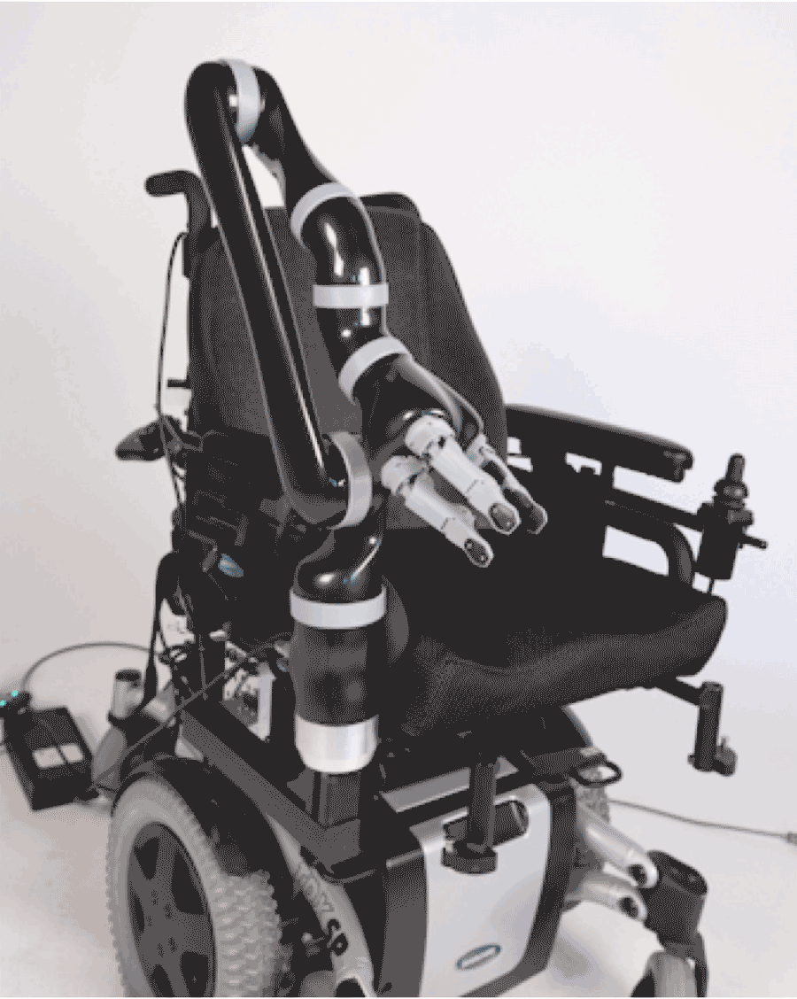
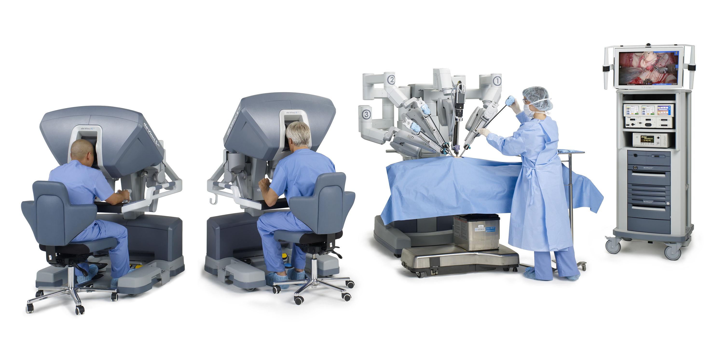

Types of Robots
The robots are taking over the medical world.
Laboratory Robots are capable of carrying out hundreds of repetitive tasks at fast speeds reliably. They save time and free manpower for other purposes. [1]
Grippers are designed specially for handling microplates in laboratories. There are two types of grippers: pneumatic and electric-end effectors. [2]

Hospital Robots are used to collect and distribute medicine or assist in the lifting and positioning of patients at busy times in hospitals. [1]
They deliver items within the hospital as they integrate with workflows, IT systems, doors, and lifts. Hospital AMRs have flexible design for different jobs and are able to work in long shifts without breaks. [2] They also have on-demand telepresence which allow staff members in the hospital to focus on more pressing matters than logistics. They are also known to increase patient satisfaction.

Rehabilitation Robots are used to help permanently or temporarily disabled people who have difficulty controlling their bodies on their own. [1]
Wheelchair Mounted Robotic Arms can work in any workspace and in an unstructured environment. They can help patients who are unable to use their limbs pick up and carry objects from the floor or shelves. [2]

Surgical Robots allow surgeries to be carried out with greater precision, and they allow remote surgery to occur. [1]
Da Vinci Surgical System is a robotic surgical system made by the company Intuitive Surgical. It was approved by the Food and Drug Administration in 2000, and it is modelled such that the surgeon controls the surgery from the console. [2] Da Vinci Surgical System is generally used for prostatectomies, and is progressively being used for cardiac valve repair and gynecologic surgical processes.

{kind=link}
{kind=link}
{kind=link}
{kind=link}
{kind=link}